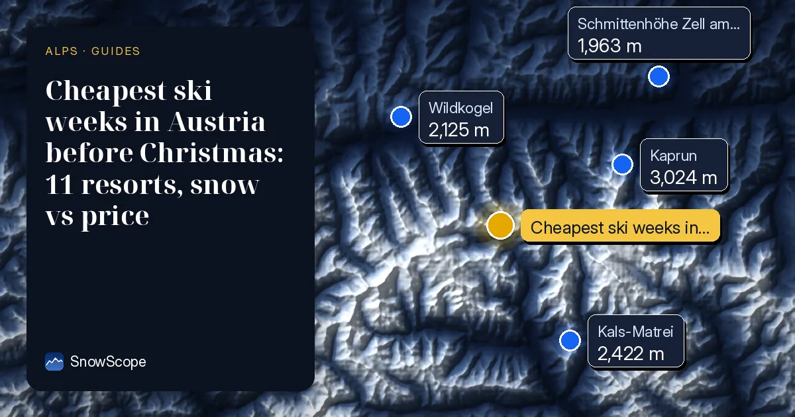

أرخص سيمانات السكي فالنمسا قبل نوال: 11 محطة، التلج مقابل الثمن
الجواب القصير: أحسن سيمانات دجنبر فالقيمة فالنمسا كاينين فالقرى العالية، ماشي فالكلاسييات. Galtür (258 EUR ل 6 أيام حتى ل 18 دجنبر) و Kühtai (269 EUR حتى ل 18 دجنبر) بجوج كان فيهم 30 سم ولا كثر فالوسط فسيمانة 15 حتى 21 دجنبر فكثر من 90 % من 46 شتوة ديالنا.
شوف توقعات التلج مباشرة ديال Cheapest ski weeks in Austria before Christmas, compared فالتطبيق ديال SnowScopeالعلو ديال التلج، التنبيهات والخريطة 3D، فابور.
كيفاش قارنا
خدينا 11 محطة فالنمسا عالية بما فيه الكفاية باش تحسب فدجنبر، وشفنا جوج حوايج. الأول التلج: النسبة ديال الشتوات اللي فيهم 30 سم ولا كثر فالوسط فسيمانة 15 حتى 21 دجنبر، ونفس النسبة لسيمانة نوال فآخر 15 شتوة. التاني السكيباس ديال 6 أيام للكبار فاللائحة الرسمية ديال كل محطة، بثمن بداية الموسم إلا كان. الأرقام فالخريطة هي نفس الأرقام فاللائحة.

الرابحين: قرى عالية فيها موسم هادي
Kühtai (2) هي البطلة فالتلج بين القرى: أول تيليسييج ف 1939 م، الوسط كان فيه 30 سم فنص دجنبر ف 98 % ديال الشتوات، والسكيباس ديال 6 أيام فالموسم الهادي ب 269 EUR حتى ل 18 دجنبر. Galtür (3) هي أرخص سيمانة فاللائحة، 258 EUR حتى ل 18 دجنبر، و 93 % ديال الشتوات فيهم 30 سم فالوسط.
Obertauern (1) أكبر وأغلى، 331 EUR ل 6 أيام حتى ل 25 دجنبر، و 80 % ديال الشتوات فيهم 30 سم فنص دجنبر. التلاتة عندهم نفس القوة: كتزلج من الباب، بلا سكيباس ديال كلاسيي.
المضمونين: الكلاسييات، بثمن
الكلاسييات تقريبا مضمونين فالوسط فنص دجنبر: Mölltaler Gletscher (8)، Pitztal (9) و Stubai (10) كان فيهم 30 سم ف 100 % من الشتوات، و Hintertux (7) ف 87 %. ولكن كتخلص. ستة أيام ب 332 EUR ف Mölltaler Gletscher فالموسم الهادي (آخر لائحة 2025-26)، 355 EUR ف Stubai، 399 EUR ف Hintertux، 410 EUR ف Pitztal، ومن 396 حتى ل 440 EUR ف Kitzsteinhorn (11).
النقطة الضعيفة ديالهم هي الواد: Hintertux فيها 16 سم فأول تيليسييج (1500 م) نهار 15 دجنبر عادي، و Kitzsteinhorn فيها 6 سم ف 765 م. كتزلج لفوق وكتهبط بالتيليفيريك.
المقامرات: صغار وهابطين
Lachtal (4) و Hochkar (5) هوما الخرجات الرخيصة ديال نهار: Lachtal من 62 EUR للنهار، و Hochkar بأثمنة متبدلة شفناها من 32,90 EUR فالأيام الهادية ديال دجنبر. بجوج كان فيهم 30 سم فالوسط فنص دجنبر فشي جوج تلت حتى لتلت ربع ديال الشتوات (72 % و 63 %)، وبجوج خسرو بزاف ديال التلج ديال دجنبر.
Turracher Höhe (6) هي اللي خاصك تبعد منها فدجنبر على حساب التلج: 23 سم فالوسط نهار 15 دجنبر عادي، 39 % ديال الشتوات فيهم 30 سم فنص دجنبر وغير 27 % من سيمانات نوال الجداد. والسكيباس ديالها ديال 6 أيام حتى هو ماشي رخيص: 353 EUR فالموسم الهادي.
كيفاش تختار
لسيمانة ثابتة قبل نوال بميزانية صغيرة: Galtür ولا Kühtai، محجوزين باش يساليو حتى ل 18 دجنبر. لسيمانة ثابتة بلا خوف على التلج: Mölltaler Gletscher هو أرخص كلاسيي، و Stubai أحسن حل وسط حدا Innsbruck. لويكاند مرن: Hochkar ولا Lachtal، على حساب التوقعات. شنو ما حجزتي، شوف خريطة التلج سيمانة قبل.
نصايح للي كيتزلجو
- ف Galtür ولا Kühtai خلي السيمانة تسالي حتى ل 18 دجنبر باش تاخد ثمن الموسم الهادي.
- فالكلاسييات تزلج فالنص الفوقاني وهبط بالتيليفيريك؛ الوديان نادرا ما كيكونو بيض فدجنبر.
- المحطات الصغار: شري بالنهار، وغير فاش التوقعات كتبين تلج بصح.
- قبل أي خروج من البيست، قرا النشرة الجهوية ديال الانهيارات (Tirol، Salzburg، Kärnten، Steiermark).
المراجع والمصادر
- Obertauern: official lift-pass prices (2026-27), checked 13 November 2026 www.ski-obertauern.at/en/ski-pass/ski-pass-prices
- Kühtai: official lift-pass prices (2026-27), checked 13 November 2026 www.kuehtai.info/service/service/preise-wintersaison-2026-2027.html
- Galtür: official lift-pass prices (2026-27), checked 13 November 2026 www.galtuer.com/en/winter/operating-times-prices/skipass-prices-silvapark
- Lachtal: official lift-pass prices (2026-27), checked 13 November 2026 www.lachtal.at/en/tickets-prices/day-ski-passes/
- Hochkar: official lift-pass prices (2026-27), checked 13 November 2026 shop.hochkar.com/en/products/skitickets
- Turracher Höhe: official lift-pass prices (2026-27), checked 13 November 2026 www.turracherhoehe.at/en/winter/tariffs
- Hintertuxer Gletscher: official lift-pass prices (2026-27), checked 13 November 2026 www.hintertuxergletscher.at/en/tickets-rates/tickets-rates/rates-hintertux-glacier/
- Mölltaler Gletscher: official lift-pass prices (2025-26), checked 13 November 2026 www.moelltaler-gletscher.at/en/price-list/winter/moelltaler-gletscher
- Pitztaler Gletscher: official lift-pass prices (2026-27), checked 13 November 2026 www.pitztaler-gletscher.at/media/pt_price_winter_26_27.pdf
- Stubaier Gletscher: official lift-pass prices (2026-27), checked 13 November 2026 www.stubaier-gletscher.com/en/ski-area/prices/
- Kitzsteinhorn (Kaprun): official lift-pass prices (2026-27), checked 13 November 2026 www.kitzsteinhorn.at/en/tickets-prices/ski-board
على هاد الأرقام
الأرقام ديال التلج: التاريخ ديال التلج ديال SnowScope، 46 شتوة اللي فاتت (1980-81 حتى ل 2025-26) فالعلوات ديال المحطة، مصحح بالعلو (تقدير لمنطقة، ماشي البلاغات ديال المحطة)؛ «تلج مزيان» = 30 سم ولا كثر فالأرض فالمعدل ديال السيمانة. الخريطة: العلو العادي ديال التلج نهار 15 دجنبر موزع على التضاريس حسب العلو. البيستات والتيليسييجات: OpenSkiMap. الأثمنة ديال السكيباس: اللوائح الرسمية ديال المحطات، متشافة نهار 13 نونبر 2026؛ الأثمنة تقدر تتبدل.
كيفاش تستاشهد بهاد المقال
للبحث، التعليم ولا الصحافة: الأرقام والرسومات تقدر تعاود تخدم بيهم بحرية تحت CC BY 4.0 مع هاد الاستشهاد.
SnowScope (2026), أرخص سيمانات السكي فالنمسا قبل نوال: 11 محطة، التلج مقابل الثمن, https://snowscope.app/blog/ar/2026/11/austria-cheapest-december-ski-weeks-before-christmas.html, تشاف ف 2026-11-14
SnowScope (Atlas Labs). (2026, November 14). أرخص سيمانات السكي فالنمسا قبل نوال: 11 محطة، التلج مقابل الثمن. SnowScope snow reports. https://snowscope.app/blog/ar/2026/11/austria-cheapest-december-ski-weeks-before-christmas.html
BibTeX
@misc{snowscope2026austriacheapestdecembers,
author = {{SnowScope (Atlas Labs)}},
title = {أرخص سيمانات السكي فالنمسا قبل نوال: 11 محطة، التلج مقابل الثمن},
year = {2026},
month = nov,
howpublished = {\url{https://snowscope.app/blog/ar/2026/11/austria-cheapest-december-ski-weeks-before-christmas.html}},
note = {Published 2026-11-14 13:29 UTC; accessed 2026-11-14}
}· CC BY 4.0 · الطريقة، الداتا والأدوات →
تابع Cheapest ski weeks in Austria before Christmas, compared
فابور: ميساج ملي يجي التلج، والتوقعات كل صباح.